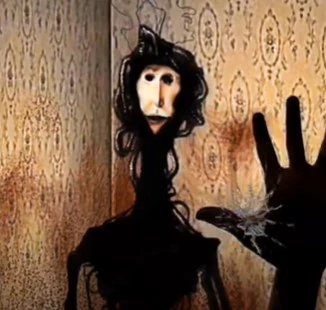
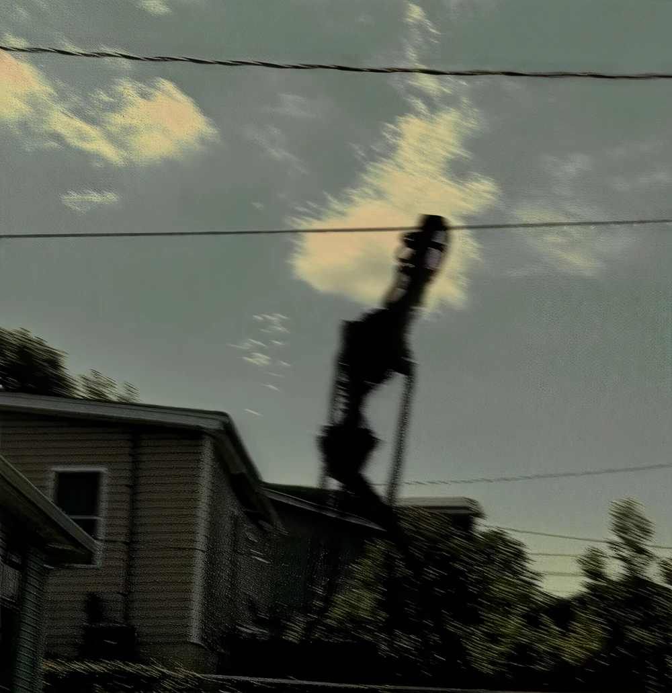
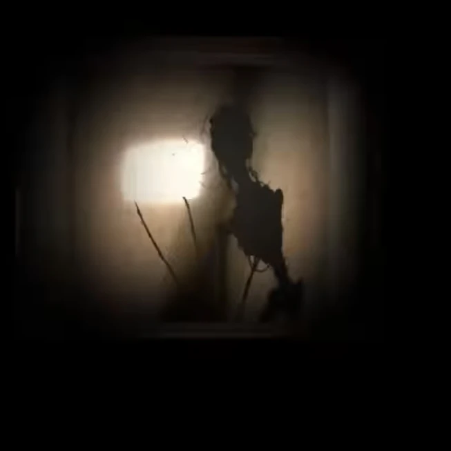
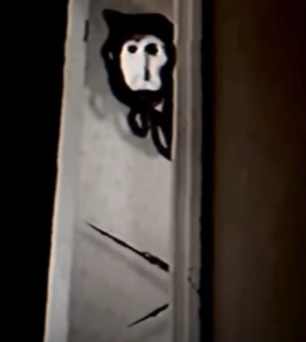
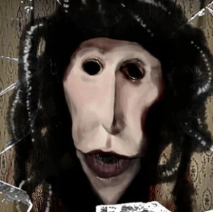
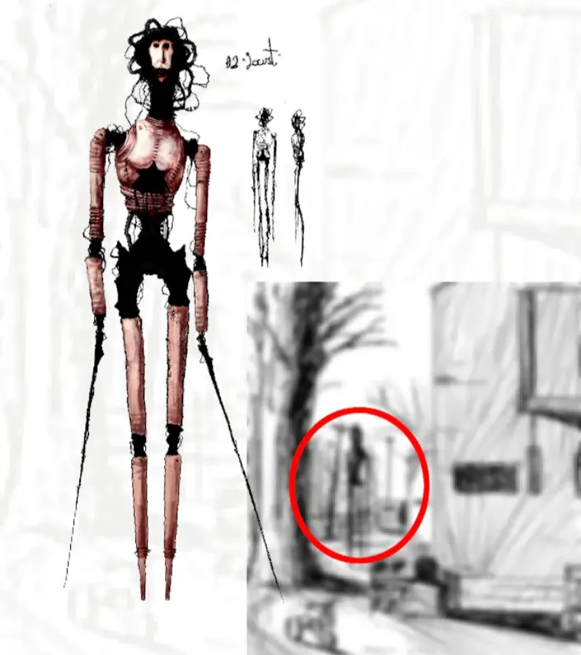
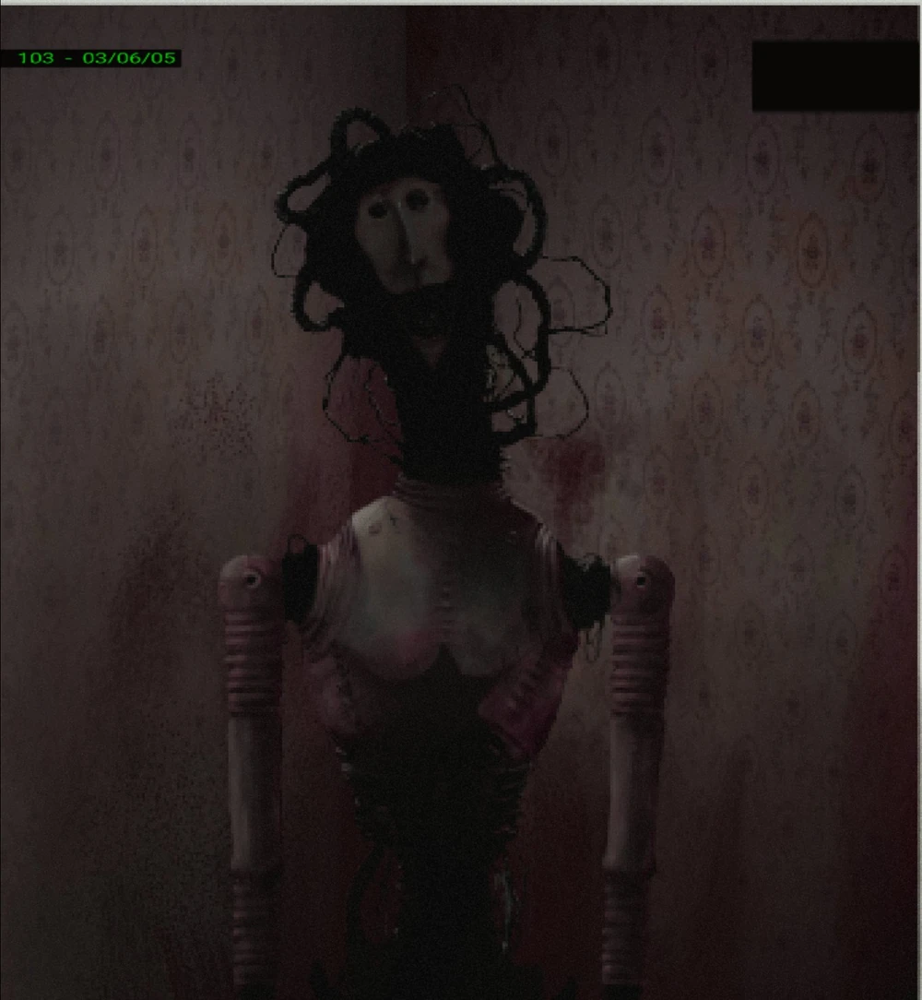

Devora hombres digital
La Langosta, también conocida como "El golpeador", es el antagonista principal de la serie de terror analógico "TOE" (The Organator Enterprise) de Doctor Nowhere (Videos de la langosta: Parte 1, Parte 2, parte 3).
Es una entidad muy misteriosa que aparece en el televisor, dispositivo u otro tipo de pantalla de la víctima y atraviesa la pantalla con sus largos y puntiagudos brazos para más tarde alimentarse de los órganos de la víctima.
Tiene poca práctica hablando con los humanos, por lo cual es común que cometa faltas de ortografía, y eso lleva a que amenace a sus víctimas con intensidad sin ningún motivo.
La Langosta es una criatura con forma humanoide completamente negra, alta y muy delgada, tiene los brazos finos y afilados en los extremos, como si fueran palos, y una cara humana deformada con los ojos hundidos y apéndices en forma de tubo que cubren su cabeza y su cuello, esto lleva a pensar que quizás sea de origen biomecánico.
Aunque es una criatura depredadora, parece mostrar curiosidad y una forma de hablar infantil. Para atraer a una presa, La Langosta puede aparecer en su televisor u otro tipo de pantalla y abrirse paso al mundo real rompiendo la pantalla con sus largos apéndices. Si la víctima trata de esconderse, la Langosta la cazará y probablemente se alimentará de ella sin siquiera tocarla (Al final de love.thumper donde dice que el cuerpo parecía intacto). También se supone que la Langosta se alimenta de los órganos de sus víctimas.
La Langosta ataca a las personas rompiendo las pantallas y, probablemente, comiéndoselas. Por lo que podemos ver en el segundo episodio de TOE llamado "love.thumper", hay un texto al final del video que dice que el cuerpo parecía estar "intacto", lo que sugiere que la Langosta consume los órganos de sus víctimas sin causar heridas externas.
Cuando la Langosta aparece en la pantalla, suele aparecer en una habitación con papel tapiz anticuado. Hipotéticamente la Langosta es un niño, o intenta parecer serlo. Esto explica que tenga la misma forma de hablar de un niño. A pesar de que la Langosta es principalmente una criatura depredadora, pretende ser amigable, incluso si escribe con faltas de ortografía.
(TOE 1): En este primer video, que tiene 'atrapado' como su única descripción, se muestra a Locust haciendo sonidos de gorgoteo y gemidos, como si estuviera muriendo de hambre, en la esquina de una habitación con papel tapiz beige de estilo antiguo, mientras tanto, una mano humana comienza a golpear la pantalla del televisor o monitor repetidamente, comenzando a agrietarla. Cuando la mano está a punto de romper la pantalla, el video termina. En este video, The Locust se presenta como una criatura negra larguirucha con un cuerpo fibroso y esquelético, una clavícula llena de cicatrices y una cara deformada con ojos hundidos, similar a una caricatura grotesca de un rostro humano, con apéndices tubulares alrededor de su cabeza, lo que sugiere que Locust es de naturaleza biomecánica. A pesar de esto, también es posible que estos tubos sean intestinos o apéndices con una apariencia de la misma forma. Se sabe que la mano humana en el vídeo no es la de Locust, se teoriza que es la mano de Carter, Dominik o quien sea de los dos que graban el vídeo de love.thumper.
(TOE 2) se desarrolla en la madrugada del 13 de marzo de 2005 y muestra a un tipo filmando su televisor (o computadora) en completa oscuridad mientras Locust aparece en la pantalla en la esquina de su habitación empapelada. Aquí podemos ver los brazos reales de la entidad, largos zarcillos de brazos con forma de palo que llegan hasta sus pies. Locust parece hablar y muestra la actitud de un niño al responder al saludo del camarógrafo, quien luego le pregunta qué quiere. Locust parece decir que tiene hambre y luego, cuando el niño le dice que se vaya, Locust comienza a golpear y agrietar la pantalla del televisor rápidamente con uno de sus brazos. Para horror del protagonista, Locust finalmente rompe la pantalla y la atraviesa, entrando en la sala de estar. Más tarde podemos ver al niño escondido en un armario y bajando el volumen para que el monstruo no lo encuentre. Desafortunadamente, la criatura abre la puerta del armario y lo encuentra. Locust se esconde detrás de la puerta, la abre rápidamente y luego se asoma, permaneciendo quieto por un rato mientras hace ligeros movimientos con los brazos, como si fuera un animal que determina si su presa representa una amenaza. Después de acostumbrarse y ver que su presa no intenta defenderse, Locust finalmente ingresa al armario y ataca al camarógrafo. Finalmente aparece una imagen de la esquina de la habitación de Locust, manchada de sangre detrás de la pantalla rota, junto con un texto azul que dice "El cuerpo apareció intacto".
(TOE 3) muestra una serie de imágenes en el papel tapiz de la habitación de Locust, con una extraña música de piano de fondo, siendo la primera un texto que dice "Es hora de levantarse y brillar" con el dibujo de un sol en el cielo. La siguiente imagen muestra un reloj en la pared con el texto "los niños buenos se levantan temprano y brillantes". La siguiente muestra un rincón de la habitación con algunos juguetes de niños y un texto que dice "los niños buenos juegan a fingir". La siguiente fotografía muestra un dibujo en la pared que aparentemente representa a Locust alimentándose de una de sus víctimas. La siguiente imagen muestra otro garabato en la pared que representa al propio Locust y un texto que dice "los niños buenos no juegan con su comida hasta que se acaba". Y finalmente vemos un último dibujo en la pared con el texto "los niños buenos hacen amigos". De repente, la música se detiene y aparece por un segundo un corazón que late conectado con vasos y tendones al techo de la habitación de Locust. Después de esto viene una aplicación llamada Pen Palace para enviar mensajes a tus seres queridos, que parece tener una nueva función de chat de video. Dos amigos en línea llamados Carter y Dominik se conectan a Internet y comienzan a hablar. Carter comienza a escribirle a Dominik que se alegra de que estén hablando después de meses y que si necesita hablar, él estará allí para él. Sin embargo, en respuesta a esto, Dominik responde de manera fría y cortante y luego le pide hacer una videollamada. Al principio, Carter se niega, explicándole a Dominik que su madre está dormida y es casi la 1 de la mañana donde él está. Pero Dominik comienza a insistir tanto que Carter finalmente acepta, con la condición de que Dominik se quede callado. Él responde con "muerto de hambre. Ayuda por favor". Carter piensa que es una mala broma y le dice que nunca fueron divertidos. Luego, Carter recibe una solicitud de videochat entrante y la acepta. Pero cuando la llamada se conecta, Carter encuentra al Locust volcado de espaldas en la esquina de su habitación, al otro lado de la pantalla. Finalmente, se ve un video muy corto del corazón latiendo en la esquina de la habitación, con un texto que dice "nada de esto tiene sentido, todo lo de adentro se fue", sugiriendo que el Locust se alimenta de los órganos de sus víctimas, de alguna manera sin tocarlos ni causarles heridas externas.
1. Si ves a la Langosta en tu pantalla, apaga el dispositivo inmediatamente.
2. Para mayor seguridad, tira el dispositivo a la basura o directamente destrúyelo para garantizar la seguridad total.
3. Si te encuentras a la Langosta y este ya ha salido del televisor, correr es una opción más útil que esconderse ya que se le considera un buscador muy inteligente. (aunque puede que correr tampoco funcione ya que es INHUMANAMENTE rápido). Si puedes, usa un coche o una moto para escapar, ya que conducir a altas velocidades te puede ayudar.
La Langosta tal como aparece en TOE 3
La Langosta aparentemente matando a alguien (ya que ese no es su brazo)
La Langosta libre
La Langosta dentro de la pantalla de un televisor
La Langosta en la puerta de Carter
Momento exacto en el que la Langosta rompe la pantalla
Rediseño de la Langosta
La Langosta de pie en su habitación